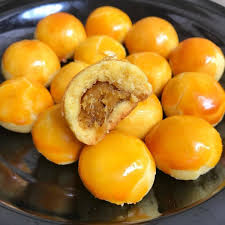

WELCOME TO KAMPOENG NASTAR

Sejarah Kue Kering
Keberadaan kue kering, sudah dikenal sejak abad ke-7 oleh bangsa Persia atau kini dikenal dengan nama Iran. Uniknya, kue kecil ini tercipta secara tidak sengaja. Sejarah penemuan kue kering berasal dari para tukang roti yang ingin membuat kue seperti biasanya.
Saat hendak memanggang kue, para tukang kue kesulitan menentukan suhu oven yang akan digunakan. Untuk mendapatkan suhu yang tepat, mereka pun melakukan percobaan kecil dengan menjatuhkan sedikit adonan kue ke dalam oven. Namun, siapa sangka, sedikit adonan yang terjatuh tadi justru bisa mengembang dan memiliki rasa yang renyah. Inilah kemudian menjadi awal terciptanya kue kering.
Di Timur Tengah, kue kering sering kali terkait dengan perayaan agama, seperti Idul Fitri. Kue-kue kering khas Timur Tengah, seperti ma'amoul dari Mesir atau ka'ak dari Lebanon, memainkan peran penting selama perayaan agama dan budaya. Di Asia, kue kering tradisional seperti kue bulan di Tiongkok atau kue kering kacang di Indonesia memiliki sejarah yang panjang.
Di Amerika Serikat, sejarah kue kering terkait erat dengan imigrasi dan pengaruh budaya. Selama Thanksgiving dan Natal, kue kering seperti chocolate chip cookies dan sugar cookies menjadi hidangan utama. Selama abad ke-20, perkembangan teknologi dan perubahan dalam bahan-bahan membuat proses pembuatan kue kering menjadi lebih efisien, dan kue kering menjadi makanan ringan populer sepanjang tahun.
Seiring berkembangnya industri makanan dan kekreatifan para koki, kue kering telah mengalami inovasi yang signifikan. Mulai dari kue kering bebas gluten hingga kue kering dengan isian yang unik, variasi kue kering terus berkembang. Pada zaman modern, kue kering juga sering menjadi produk bisnis kecil atau hobi untuk banyak orang yang mengekspresikan kreativitas mereka.